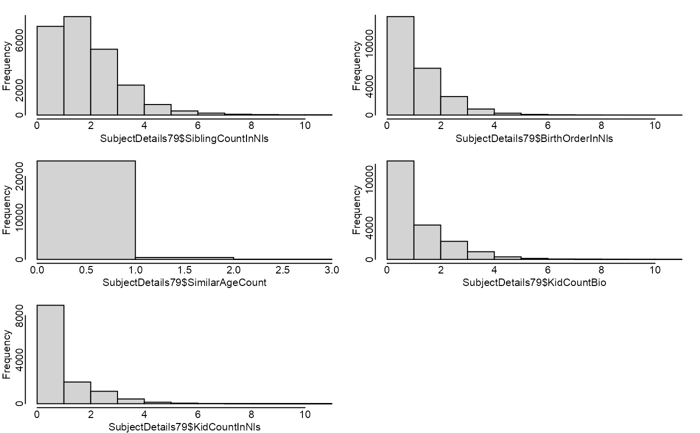

R/subject-details-79-doc.R
SubjectDetails79.RdThese variables are useful to many types of analyses (not just behavior genetics), and are provided to save users time.
A data frame with 24,181 observations on the following 12 variables.
SubjectTag see the variable of the same name in Links79Pair
ExtendedID see the variable of the same name in Links79Pair
Generation Indicates if the subject is in generation 1 or 2.
Gender Indicates if the subject is Male or Female.
RaceCohort Indicates if the race cohort is Hispanic, Black or Nbnh (ie, Non-black, non-hispanic). This comes from the Gen1 variable R02147.00 and Gen2 variable C00053.00.
SiblingCountInNls The number of the subject's siblings, including himself/herself (a singleton has a value of one). This considers only the siblings in the NLSY. For Gen1, this can exclude anyone outside the age range. For Gen2, this excludes anyone who doesn't share the same mother.
BirthOrderInNls Indicates the subject's birth order among the NLSY siblings.
SimilarAgeCount The number of children who were born within roughly 30 days of the subject's birthday, including the subject (for instance, even an only child will have a value of 1). For Gen2 subjects, this should reflect how many children the Gen1 mother gave birth to at the same time (1: singleton; 2: twins, 3: triplets). For Gen1 subjects, this is less certain, because the individual might have been living with a similarly-aged housemate, born to a different mother.
HasMzPossibly Indicates if the subject might be a member of an MZ twin/triplet. This will be true if there is a sibling with a DOB within a month, and they are the same gender.
IsMz Indicates if the subject has been identified as a member of an MZ twin/triplet.
KidCountBio The number of biological children known to the NLSY (but not necessarily interviewed by the NLSY.
KidCountInNls The number of children who belong to the NLSY. This is nonnull for only Gen1 subjects.
Mob The subject's month of birth. The exact day is not available to the public. By default, we set their birthday to the 15th day of the month.
LastSurveyYearCompleted The year of the most recently completed survey.
AgeAtLastSurvey The subject's age at the most recently completed survey.
IsDead ##This variable is not available yet## Indicates if the subject was alive for the last attempted survey.
DeathDate ##This variable is not available yet## The subject's month of death. The exact day is not available to the public. By default, we set their birthday to the 15th day of the month.
Gen1 information comes from the Summer 2013 release of the NLSY79 sample. Gen2 information comes from the Summer 2013 release of the NLSY79 Children and Young Adults sample. Data were extracted with the NLS Investigator (https://www.nlsinfo.org/investigator/).
#> SubjectTag ExtendedID Generation Gender #> Min. : 100 Min. : 1 Min. :1.000 Male :12276 #> 1st Qu.: 314025 1st Qu.: 3139 1st Qu.:1.000 Female:11913 #> Median : 620050 Median : 6195 Median :1.000 NA's : 1 #> Mean : 618600 Mean : 6180 Mean :1.476 #> 3rd Qu.: 914501 3rd Qu.: 9140 3rd Qu.:2.000 #> Max. :1268600 Max. :12686 Max. :2.000 #> #> RaceCohort SiblingCountInNls BirthOrderInNls SimilarAgeCount #> Hispanic: 4215 Min. : 1.000 Min. : 1.000 Min. :1.00 #> Black : 6362 1st Qu.: 1.000 1st Qu.: 1.000 1st Qu.:1.00 #> Nbnh :13613 Median : 2.000 Median : 1.000 Median :1.00 #> Mean : 2.355 Mean : 1.669 Mean :1.02 #> 3rd Qu.: 3.000 3rd Qu.: 2.000 3rd Qu.:1.00 #> Max. :11.000 Max. :11.000 Max. :3.00 #> #> HasMzPossibly KidCountBio KidCountInNls Mob #> Min. :0.00000 Min. : 0.000 Min. : 0.000 Min. :1955-06-15 #> 1st Qu.:0.00000 1st Qu.: 0.000 1st Qu.: 0.000 1st Qu.:1960-08-15 #> Median :0.00000 Median : 1.000 Median : 0.000 Median :1964-06-15 #> Mean :0.01282 Mean : 1.253 Mean : 0.907 Mean :1973-01-26 #> 3rd Qu.:0.00000 3rd Qu.: 2.000 3rd Qu.: 2.000 3rd Qu.:1985-06-15 #> Max. :1.00000 Max. :11.000 Max. :11.000 Max. :2009-10-15 #> NA's :3678 NA's :11504 NA's :2 #> LastSurveyYearCompleted AgeAtLastSurvey IsMz #> Min. :1979 Min. : 0.0082 Mode :logical #> 1st Qu.:2000 1st Qu.:21.9220 FALSE:24114 #> Median :2010 Median :29.2977 TRUE :76 #> Mean :2004 Mean :32.0523 #> 3rd Qu.:2010 3rd Qu.:47.3703 #> Max. :2010 Max. :54.9213 #> NA's :1095 NA's :1095oldPar <- par(mfrow=c(3,2), mar=c(2,2,1,.5), tcl=0, mgp=c(1,0,0)) hist( SubjectDetails79$SiblingCountInNls, main = "", breaks =seq(from=0, to=max(SubjectDetails79$SiblingCountInNls, na.rm=TRUE), by=1) ) hist( SubjectDetails79$BirthOrderInNls, main = "", breaks = seq(from=0, to=max(SubjectDetails79$BirthOrderInNls, na.rm=TRUE), by=1) ) hist( SubjectDetails79$SimilarAgeCount, main = "", breaks = seq(from=0, to=max(SubjectDetails79$SimilarAgeCount, na.rm=TRUE), by=1) ) hist( SubjectDetails79$KidCountBio, main = "", breaks = seq(from=0, to=max(SubjectDetails79$KidCountBio, na.rm=TRUE), by=1) ) hist( SubjectDetails79$KidCountInNls, main = "", breaks = seq(from=0, to=max(SubjectDetails79$KidCountInNls, na.rm=TRUE), by=1) ) #hist(SubjectDetails79$Mob, main="", # breaks=seq.Date( # from=min(SubjectDetails79$Mob, na.rm=TRUE), # to=max(SubjectDetails79$Mob, na.rm=TRUE), # by="year") #) par(oldPar)